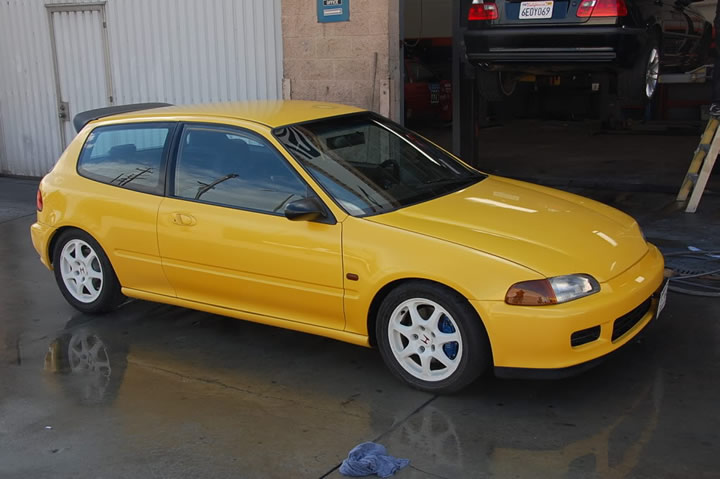
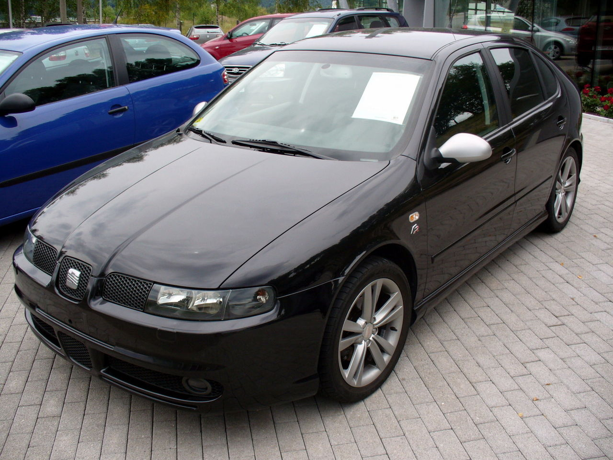
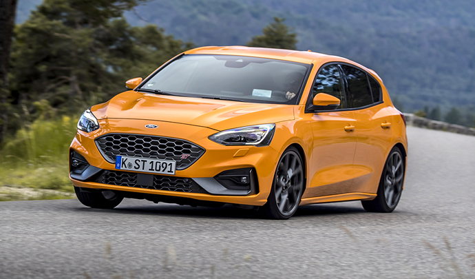

Nos nouveaux coureurs automobile !
Sponsorisé par GarageRoy, ils courent pour nous représenter.

Benn est un pilote de course automobile passionné qui a récemment été sponsorisé par le garage local "GarageRoy". Il a commencé sa carrière de pilote avec sa Honda Civic EG5, une voiture compacte mais agile et puissante, qui est devenue son arme de choix sur la piste.
Grâce au soutien du GarageRoy, Benn a pu améliorer sa Honda Civic EG5 avec des équipements de pointe, tels que des pneus de course, des freins de performance et une suspension ajustable, lui permettant de rivaliser avec les meilleurs pilotes de sa catégorie.
Benn est un coureur de voitures compétitif et déterminé, qui est toujours à la recherche de moyens pour améliorer ses performances et gagner des courses. Il travaille en étroite collaboration avec les mécaniciens de GarageRoy pour s'assurer que sa Honda Civic EG5 est toujours en parfait état de fonctionnement, prête à affronter les défis de la piste.Avec le soutien de GarageRoy et sa Honda Civic EG5, Benn est prêt à faire face à tous les défis qui se présentent sur la piste de course, et à démontrer son talent et sa détermination pour atteindre les plus hauts sommets de la course automobile.

Ugo est un pilote de course passionné qui s'est récemment associé avec le garage local "GarageRoy" pour devenir sponsorisé. Sa voiture de course préférée est une Renault Clio 4 RS, qui lui offre une combinaison parfaite de maniabilité, de puissance et de performance sur la piste.
Grâce au partenariat avec GarageRoy, Ugo a été en mesure de personnaliser sa Clio 4 RS avec des équipements de pointe tels que des pneus de course, des freins haute performance et une suspension ajustable, lui permettant d'atteindre des vitesses incroyables tout en maintenant un contrôle total de la voiture.
Ugo est un coureur de voitures déterminé et compétitif, qui travaille dur pour améliorer constamment ses compétences et remporter des victoires. Il travaille en étroite collaboration avec l'équipe de mécaniciens de GarageRoy pour s'assurer que sa Renault Clio 4 RS est toujours en parfait état de fonctionnement, prête à relever tous les défis sur la piste.
Avec le soutien de GarageRoy et sa Renault Clio 4 RS, Ugo est prêt à affronter tous les concurrents sur la piste, en démontrant sa détermination, son talent et sa passion pour la course automobile. Son objectif est de gagner des courses et devenir l'un des meilleurs coureurs de sa catégorie, et il est prêt à tout pour atteindre cet objectif.

Rémito est un coureur de voitures passionné qui a récemment été sponsorisé par le garage local "GarageRoy". Il pilote une Seat Leon FR, une voiture sportive avec une grande maniabilité et une accélération rapide, ce qui la rend idéale pour les courses de voitures.
Grâce au soutien de GarageRoy, Rémito a été en mesure de personnaliser sa Seat Leon FR avec des équipements de course de pointe, tels que des pneus haute performance, des freins améliorés et une suspension ajustable, pour offrir une expérience de conduite optimale sur la piste.
Rémito est un coureur de voitures compétitif et déterminé, qui s'entraîne dur pour améliorer ses performances et remporter des victoires. Il travaille en étroite collaboration avec les mécaniciens de GarageRoy pour s'assurer que sa Seat Leon FR est toujours en parfait état de fonctionnement, prête à relever tous les défis de la piste.
Avec le soutien de GarageRoy et sa Seat Leon FR, Rémito est prêt à faire face à tous les concurrents sur la piste, démontrant sa passion pour la course automobile et sa détermination à remporter des victoires. Il a pour objectif de devenir l'un des meilleurs coureurs de voitures de sa catégorie et il est prêt à travailler dur pour y arriver.

Mael Don Corleone est un coureur de voitures passionné et ambitieux qui a récemment été sponsorisé par le garage local "GarageRoy". Il pilote une Ford Focus ST, une voiture compacte et puissante, offrant une maniabilité et une accélération exceptionnelles, parfaites pour les courses de voitures.
Grâce au soutien de GarageRoy, Mael Don Corleone a été en mesure de personnaliser sa Ford Focus ST avec des équipements de course de pointe, tels que des pneus de course, des freins haute performance et une suspension ajustable, pour offrir une expérience de conduite optimale sur la piste.
Mael Don Corleone est un coureur de voitures compétitif et ambitieux, qui travaille dur pour améliorer ses performances et remporter des victoires. Il collabore étroitement avec l'équipe de mécaniciens de GarageRoy pour s'assurer que sa Ford Focus ST est toujours en parfait état de fonctionnement, prête à relever tous les défis sur la piste.
Avec le soutien de GarageRoy et sa Ford Focus ST, Mael Don Corleone est prêt à affronter tous les concurrents sur la piste, démontrant sa passion pour la course automobile et sa détermination à remporter des victoires. Son objectif est de devenir l'un des meilleurs coureurs de voitures de sa catégorie et il est prêt à tout pour y arriver.